Agora, bir topluluğun bir konuyu tartışıp oylamayla tek bir karara bağlaması için tasarlanmış bir forum. Süreç şöyle işliyor: Bir üye konu açtığında 24 saatlik tartışma dönemi başlıyor. Bu dönemde herkes mesaj yazabiliyor, ama her katılımcı en fazla bir fikir önerebiliyor. Tartışma bitince en fazla beş tur süren oylamaya geçiliyor ve her turda az oy alan fikirler eleniyor. Bir fikir %75 oya ulaşırsa ya da yarışta tek fikir kalırsa konu hemen karara bağlanıyor. Beşinci turun sonunda ise en çok oyu alan fikir kazanıyor.
Forumda mesajlar silinemiyor; bir mesajı gizlemek için bile oylama yapılması gerekiyor. Konu açma, oy verme ve sonuç gibi önemli olayların hepsi, sonradan değiştirilemeyen bir kayıt defterine yazılıyor. Aşağıdaki tablo, ödevde istenen her maddenin Agora'da nasıl karşılandığını gösteriyor.
| Ödevde istenen | Agora'daki karşılığı |
|---|---|
| Herkes konu açabilmeli, düzenleyebilmeli, silinmesini önerebilmeli; alt konular olmalı | Konu onay beklemeden hemen açılıyor. Tartışma sürerken sahibi konuyu düzenleyebiliyor ve eski hâli saklanıyor. Bir konuyu kaldırmak için 3/4 oy gerekiyor. Alt konu, üst konunun katılım kuralını yalnızca daraltabiliyor. |
| Kararlar çoğunlukla alınmalı; konu sonunda fikirler uzlaşmalı | Turlarla eleme, %75 ezici üstünlük ve yeter sayı kuralı var. Süreç sonunda tek bir fikir karar oluyor. Karara katılmayan üye itiraz konusu açabiliyor. |
| Giriş ekranı olmalı; kayıtta ad soyad, adres, doğum tarihi, şifre ve takma ad istenmeli | Kayıt ve giriş sayfaları var. Ad, adres ve doğum tarihi gizli tutuluyor; diğer üyeler yalnızca takma adı görüyor. Şifresini unutan üye kurtarma koduyla yeni şifre belirleyebiliyor. |
| Kişi bilgilerine göre kısıt konabilmeli (ör. İstanbul konusuna yalnızca İstanbullular katılsın) | Konuya konum (il › ilçe) ve yaş kuralı eklenebiliyor. Kuralı sağlamayan üye o konuda gözlemci oluyor: konuyu okuyabiliyor ama oy veremiyor. |
| Herkes eşit olmalı, ama bazıları daha eşit olabilmeli | Kurallar herkes için aynı. Uzmanın oyu kendi alanında 10 sayılıyor; ancak "çift çoğunluk" kuralı, birkaç uzmanın kalabalığı tek başına yenmesini engelliyor. |
| Kurallar ve uygunluk bir ontolojiyle ölçülmeli; yönetmelik denetlemeli | Uygunluk; konum ağacı (Türkiye › bölge › il › ilçe), kategori ağacı ve kategori kavramlarından oluşan bir ontolojiyle hesaplanıyor. Yönetmeliğin D1–D7 maddeleri konuları ve mesajları otomatik olarak denetliyor. Yönetmeliğin kendisi de oylamayla değişebiliyor. |
| Tartışmalar silinmemeli; silinecekse oylanmalı | Mesajlar silinemiyor. Gizleme 3/4 oylamayla yapılıyor ve iz bırakıyor. Düzenlenen mesajların eski hâli de görülebiliyor. |
| Oy hakkı devredilebilmeli; azınlık korunmalı | Oy hakkı genel, kategori ya da konu kapsamında devredilebiliyor ve bir kişi en fazla 5 devir taşıyabiliyor. Azınlığı itiraz konusu, 3/4 eşikler, korunan temel haklar ve gizli oy koruyor. |
| Hem uygulama hem web sitesi olmalı | Web sitesi, telefona kurulabilen web uygulaması (PWA), Android uygulaması (APK), Expo Go ve REST API. |
| Dağıtık defter, bilirkişi ve yapay zeka kullanılmalı; kişiler bir graf üzerinde gösterilmeli | Üç kopyalı kayıt defteri ve oy makbuzu; uzmanlık oylaması; özet yazan yapay zeka üye; üye ağı (PageRank ile etki, Gini katsayısıyla eşitsizlik ölçümü). |
| Ders konuları: problem çerçeveleme, SOLID ve tasarım desenleri, UML | Problem çerçeveleme Bölüm 11'de, SOLID ve desenler Bölüm 10'da, UML diyagramları Şekil 1–11'de. |
Sistemde altı tür aktör var. Bunlardan biri, zamanlayıcı, bir kişi değil; sistemin kendi içinde çalışan bir görev.
| Aktör | Yapabildikleri |
|---|---|
| Ziyaretçi | Konuları ve kayıt defterini okuma, arama yapma, kayıt olma ve giriş yapma. |
| Üye | Ziyaretçinin yapabildiklerine ek olarak konu açma, mesaj ve fikir yazma, oy verme, oyunu makbuzla doğrulama, oy devretme, şikayet etme ve uzmanlığa başvurma. |
| Gözlemci | Ayrı bir hesap türü değil. Bir konunun konum ya da yaş kuralını sağlamayan üye o konuda gözlemci sayılıyor: konuyu okuyabiliyor, ama oy veremiyor ve fikir yazamıyor. |
| Uzman | Alanındaki üyelerin oylamasıyla seçilmiş üye. Kendi alanındaki fikir oylamalarında oyu 10 sayılıyor. Buna karşılık oyu herkese açık ve oyuna gerekçe yazması gerekiyor. |
| Yönetici | Üye girişinden ayrı bir yönetici girişiyle panele giriyor. Üyeleri askıya alma, şikayetleri oylamaya taşıma, site duyurusu yayımlama ve yedek alma gibi işleri yapıyor. Oylamaların sonucunu değiştiremiyor ve içerik silemiyor. |
| Zamanlayıcı (sistem) | Süresi dolan tartışmaları oylamaya geçiriyor ve süresi biten turları sonuçlandırıyor. |
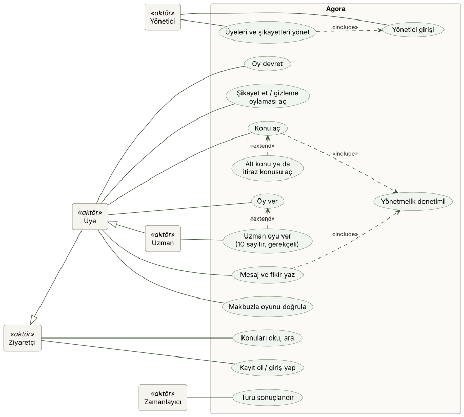
Bir konu açıldığında önce tartışma, ardından oylama turları başlıyor. Konu sonunda ya bir fikri kabul ederek karara bağlanıyor, ya sonuçsuz kalıyor ya da oylamayla kaldırılıyor. Turların kuralları bu bölümde anlatılıyor; konunun geçebileceği bütün durumlar ise Şekil 2'de özetleniyor.
Her aşamanın süresi ve eleme eşiği şöyle:
| Aşama | Süre | Kural |
|---|---|---|
| Tartışma | 24 saat | Mesajlar ve fikirler yazılıyor; her katılımcının bir fikir hakkı var. |
| 1. tur | 48 saat | %5'in altında kalan fikirler eleniyor. Bu turda yeni fikir de eklenebiliyor. |
| 2. tur | 24 saat | %5'in altında kalan fikirler eleniyor. |
| 3. tur | 24 saat | %10'un altında kalan fikirler eleniyor. |
| 4. tur | 24 saat | %20'nin altında kalan fikirler eleniyor. |
| 5. tur | 24 saat | En çok oyu alan fikir kabul ediliyor. Oylar eşitse konu sonuçsuz kalıyor. |
Turların erken bitmesini ya da geçersiz sayılmasını sağlayan üç kural daha var:
Oran nasıl hesaplanıyor? (çift çoğunluk) Bir fikrin oranı iki ayrı yoldan hesaplanıyor: ağırlıklı oylara göre (uzman oyu 10 sayılıyor) ve kişi sayısına göre (herkesin oyu 1 sayılıyor). Geçerli oran, bu ikisinden küçük olanı. Çekimser oylar da paydaya ekleniyor; böylece katılımcıların çoğu çekimser kaldığında bir fikir düşük destekle %75'e ulaşamıyor.
Örnek: 10 kişilik bir oylamada 2 uzman A fikrine, 8 üye de B fikrine oy veriyor. Ağırlıklı oyların toplamı 2 × 10 + 8 = 28. A fikri ağırlıklı oylarda 20/28 = %71, kişi sayısında 2/10 = %20 alıyor; geçerli oranı küçük olan, yani %20. B fikri ağırlıklı oylarda 8/28 = %29, kişi sayısında 8/10 = %80 alıyor; geçerli oranı %29. Bu sayede birkaç uzman kalabalığı tek başına yenemiyor, kalabalık da uzmanları yok sayamıyor.
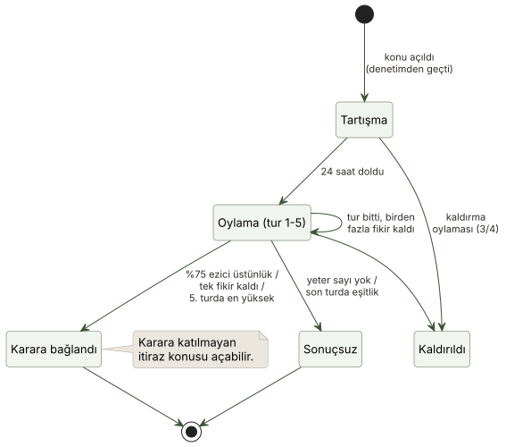
Fikir oylaması dışındaki oylamalar evet/hayır biçiminde yapılıyor. Her birinin eşiği ve süresi farklı:
| Oylama | Eşik | Süre |
|---|---|---|
| Mesaj gizleme, konu kaldırma | 3/4 | 48 saat |
| Uzmanlık başvurusu (alanın üyeleri oy veriyor) | 2/3 | 48 saat |
| Yeni kategori (bütün üyeler oy veriyor) | Salt çoğunluk | 48 saat |
| Yönetmelik değişikliği | 2/3 | 96 saat |
| Temel hak maddesi ya da korunan parametre | 3/4 | 96 saat |
Bu sayıların hiçbiri kodda sabit değil; hepsi yönetmeliğin parametresi olarak tutuluyor. Topluluk bir parametreyi oylamayla değiştirebiliyor. Yine de her parametrenin anlamlı bir aralığı var: örneğin uzman ağırlığı 0 yapılamıyor, çünkü o zaman uzmanların oyu hiç sayılmazdı.
Çoğunluk kararının azınlığı ezmeye dönüşmemesi için şu kurallar kondu:
Uygulama üç katmandan oluşuyor (Şekil 3). Bağımlılıklar yalnızca yukarıdan aşağıya doğru: üstteki katman alttakini kullanıyor, alttaki katman üsttekini tanımıyor.
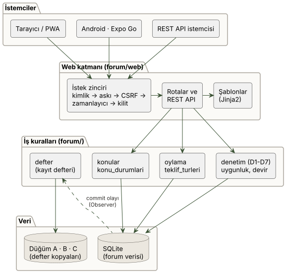
Her istek, rotaya ulaşmadan önce aynı zincirden geçiyor: kimlik → askı → CSRF → zamanlayıcı → yazma kilidi. Bu adımlar sırasıyla giriş yapan üyeyi buluyor, askıya alınmış üyeyi durduruyor, formun gerçekten bu siteden geldiğini doğruluyor, süresi dolan oylamaları sonuçlandırıyor ve aynı anda iki yazma işlemini önlüyor. Zincirdeki bir adım isteği kendisi yanıtlarsa (örneğin CSRF anahtarı yanlışsa hata sayfası dönerse) sonraki adımlar çalışmıyor.
Veritabanındaki ana kavramlar ve aralarındaki ilişkiler Şekil 4'te görülüyor. Modelle ilgili önemli noktalar:
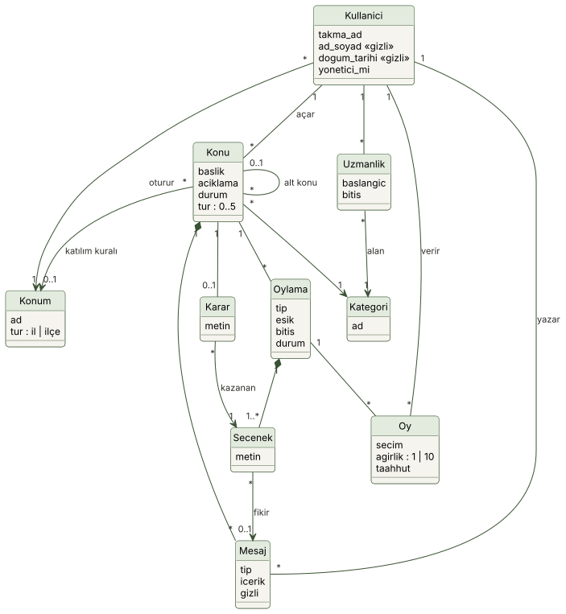
Aynı anda gelen isteklerde tutarlılık. İki üye aynı anda oy verdiğinde ya da bir oy tam oylama kapanırken geldiğinde verinin bozulmaması gerekiyor. Bunun için dört önlem alındı:
BEGIN IMMEDIATE komutuyla veritabanı kilidini alıyor. Böylece iki yazma işlemi
birbirinin arasına giremiyor.INSERT). Kişi başına tek fikir kuralını da veritabanındaki
tekil indeks koruyor. Bu davranışı, 8 iş parçacığının aynı anda yazdığı bir test denetliyor.SAVEPOINT) işliyor. Bir oylamada hata çıkarsa yalnızca o
oylamanın değişiklikleri geri alınıyor; diğer oylamalar etkilenmiyor.Bu bölümdeki sıralı diyagramlar, dört temel işlemde hangi modülün hangi sırayla çalıştığını gösteriyor.
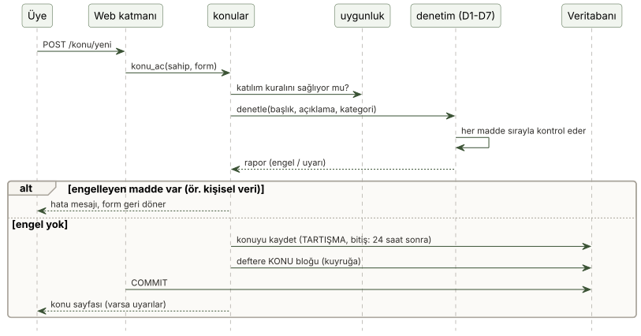
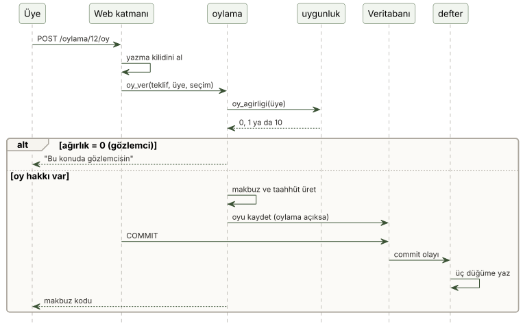
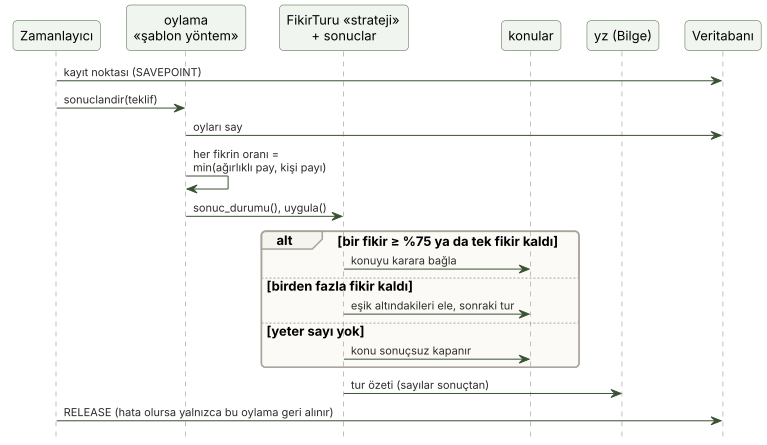
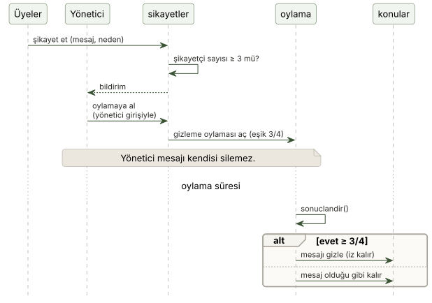
Yeni bir konu ya da mesaj, kaydedilmeden önce yönetmeliğin denetim maddelerinden sırayla geçiyor. Her maddenin bir ciddiyet düzeyi var. Engeller düzeyindeki madde metnin gönderilmesini durduruyor. Uyarır düzeyindeki madde metni yayımlıyor, ama yazana bir uyarı gösteriyor. Kapalı bir madde ise hiç çalışmıyor. Bu düzeyler de oylamayla değiştirilebiliyor.
| Madde | Ad | Neyi kontrol ediyor | Varsayılan |
|---|---|---|---|
| D1 | Saygılı dil | Hakaret listesindeki kelimeler (Türkçe çekim ekleriyle birlikte) | Uyarır |
| D2 | Kişisel veri | Telefon, e-posta, geçerli T.C. kimlik numarası, IBAN | Engeller |
| D3 | Kategoriye uygunluk | Metin, seçilen kategorinin kavramlarını içeriyor mu? İçermiyorsa daha uygun bir kategori öneriliyor. | Uyarır |
| D4 | Konum tutarlılığı | Metinde bir yer adı geçiyorsa, katılım kuralı o yerle uyumlu mu? | Uyarır |
| D5 | Benzer konu | Benzer başlıklı açık bir konu var mı? Varsa üye o konuya yönlendiriliyor. | Uyarır |
| D6 | Alt konu ilişkisi | Alt konu, üst konusuyla aynı kategoride mi? | Uyarır |
| D7 | Açıklık | Açıklama, derdini anlatacak uzunlukta mı? (en az 40 karakter) | Uyarır |
D1 başlangıçta "Engeller" düzeyindeydi. Ölçümde masum mesajları da engellediği görülünce "Uyarır" düzeyine indirildi (Bölüm 11). Kodda her madde bir zincirin halkası olarak yazıldı (Chain of Responsibility, Bölüm 10). Bu sayede yeni bir madde eklemek için mevcut kodu değiştirmek gerekmiyor; yeni bir sınıf yazıp zincire eklemek yetiyor.
Oylamaların sonradan değiştirilmediğini kanıtlamak için her önemli olay bir kayıt defterine yazılıyor. Defterin dört temel özelliği var:
taahhüt = SHA-256(oylama | seçim | makbuz) değeri yazılıyor. Makbuz kodu yalnızca oy verene ve yalnızca bir kez
gösteriliyor. Oy veren kişi, makbuzuyla oyunun deftere doğru kaydedildiğini sonradan kontrol edebiliyor. Makbuzu bilmeyen biri
ise özetten seçimi çıkaramıyor.Forumda Bilge adında bir yapay zeka üye var. Bilge'nin tek görevi özet yazmak: uzun tartışmaların özetini ve her turun sonucunu yazıyor. Oy vermiyor, fikir önermiyor ve konu açmıyor. Özetler kural tabanlı olarak üretiliyor; dışarıdaki bir dil modeli kullanılmıyor. Bu kararın üç nedeni var:
Bu yüzden özetteki her sayı doğrudan veritabanından alınıyor. Oranlar yuvarlanmıyor, aşağı kesiliyor: %74,9 hiçbir zaman "%75" diye yazılmıyor, çünkü %75 ezici üstünlük eşiği ve yuvarlanmış bir oran okuyanı yanıltabilir. Aynı veriden her zaman aynı özet çıkıyor; bunu bir test denetliyor.
Desenler yalnızca somut bir sorunu çözdükleri yerlerde kullanıldı. Bu kararda ders sunumundaki iki ilke yol gösterdi: desen bir amaç değil, araç olmalı (TD‑3) ve gereksiz karmaşıklıktan kaçınılmalı (TD‑57). Aşağıdaki tablolarda "önceki sorun" sütunu, düzenlemeden önceki kodda gerçekten bulunan sorunu gösteriyor.
| İlke | Önceki sorun | Şimdiki durum |
|---|---|---|
| S — Tek sorumluluk | 150 satırlık tek bir fonksiyon kimlik, CSRF, zamanlayıcı, hata sayfaları ve şablon filtrelerini birlikte yönetiyordu. | Her iş ayrı bir modülde: istek, hata_sayfalari, sablon, denetim, gorunum. |
| O — Açık/kapalı | Yeni bir oylama türü eklemek için 5 dosyaya yeni bir if tip == … dalı yazmak gerekiyordu. | Yeni bir oylama türü için yeni bir sınıf, yeni bir denetim maddesi için yeni bir halka, yeni bir bildirim kanalı için yeni bir adaptör yazmak yetiyor. |
| L — Liskov | Kapalı bildirim kanalı abone kabul ediyor, ardından her gönderimde hata veriyordu. | Bütün alt türler üst türün yerine sorunsuz kullanılabiliyor. Gerçek ve sahte depoların aynı sonucu verdiğini testler denetliyor. |
| I — Arayüz ayrımı | Belirgin bir sorun yoktu. | Arayüzler küçük tutuldu: bildirim kanalında 3, denetim maddesinde 1, defter deposunda 5 yöntem var. |
| D — Bağımlılığın tersine çevrilmesi | Veritabanı modülü (altyapı), üst katmandaki defteri içe aktarıyordu. | Defter, veritabanının commit olayına abone oluyor (Observer); veritabanı defteri tanımıyor. |
| Desen | Çözdüğü sorun | Agora'daki yeri |
|---|---|---|
| State (TD‑43) | durum == … kontrolleri koda dağılmıştı. Unutulan bir kontrol, kaldırılmış bir konunun geçmişini açık bırakıyordu. | konu_durumlari.py: 5 durum sınıfı, izinler ve geçiş tablosu. |
| Strategy + Template Method (TD‑36, 41) | Altı oylama türünün sonuç kuralları uzun bir if/elif zincirindeydi. | teklif_turleri.py: her tür ayrı bir sınıf. oylama.sonuclandir adımları her zaman aynı sırayla çağırıyor. |
| Chain of Responsibility (TD‑44) | D1–D7 maddeleri 77 satırlık tek bir fonksiyonun içindeydi. | denetim.py: her madde zincirin bir halkası. |
| Observer (TD‑38) | Altyapı katmanı üst katmanı doğrudan çağırıyordu. | Defter, veritabanının commit olayına abone. |
| Repository (TD‑51) | Düğüm dosyalarına erişim uzlaşma mantığının içine gömülüydü; test için disk gerekiyordu. | DugumDeposu: biri SQLite, biri bellek üzerinde iki gerçekleme. |
| Adapter (TD‑24) | Web Push ile Firebase'in arayüzleri birbirinden farklıydı. | AnlikKanal: iki kanal tek bir arayüzün arkasında. |
| Memento (TD‑47) | Bir konuda çıkan hata, zamanlayıcının o ana kadar yaptığı bütün işi geri alıyordu. | Her oylama için bir kayıt noktası açılıyor ve kuyrukların o anki hâli saklanıyor. Hata olursa yalnızca o oylama eski hâline dönüyor. |
| Facade (TD‑28) | Konu sayfasının rotası 7 alt sistemi tek tek çağırıyordu. | gorunum.konu_sayfasi(): rota yalnızca bu işlevi çağırıyor. |
Bilerek kullanılmayan desenler: Builder, Abstract Factory, Visitor ve Mediator kullanılmadı, çünkü projede bu
desenlerin çözeceği bir sorun yok. Singleton'a da gerek kalmadı; Python'da bir modül programda zaten tek kopya olarak yükleniyor.
Iterator, Command ve Factory gibi desenler Python'da fonksiyon, kapanış (closure) ve sözlükle çok daha sade biçimde yazılabiliyor.
Flask'ın kendisi de bazı desenleri hazır olarak kullanıyor: before_request zinciri bir Chain of Responsibility,
@route kaydı ise bir Registry örneği.
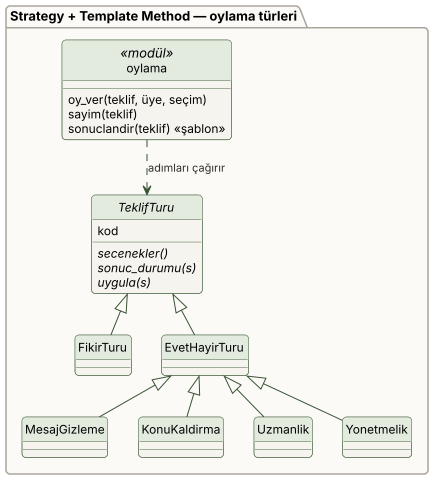
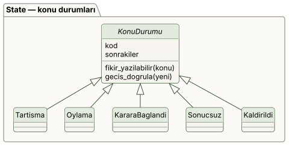
sonuclandir()
işlevi adımları hep aynı sırayla çağırıyor: sayım → sonuç durumu → uygulama. Türe özgü adımlar alt sınıflardan geliyor.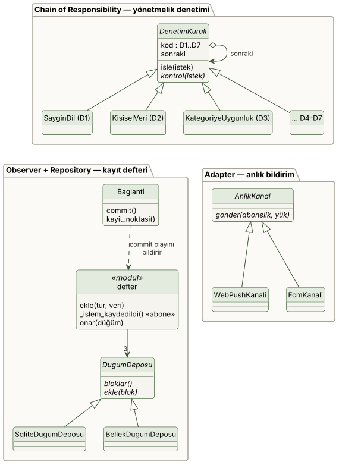
"Bir forum yapın" isteğinin arkasında altı ayrı sorun vardı. Bunların üçü yapay zeka gerektirmiyor: söz hakkının eşit dağılmaması, tartışmaların bitmemesi ve oy sayımına güvenilmemesi. Bu üç sorun oylama kurallarıyla ve kayıt defteriyle çözüldü. Diğer üçü yapay zekaya aday: tartışma özeti, içerik denetimi ve aynı konunun tekrar tekrar açılması. Her bileşen için önce "Burada yapay zeka gerçekten gerekli mi?" sorusu soruldu (H2‑9):
| Bileşen | Görev türü | Karar |
|---|---|---|
| Sayım ve eleme | Makine öğrenmesi gerekmiyor | Kural yazıldı. Kural yönetmelikte duruyor ve herkesin anlayabileceği biçimde açıklanabilmesi gerekiyor. |
| D1 hakaret | İkili sınıflandırma | Etiketli veri olmadığı için şimdilik kural kullanılıyor. Gizleme oylamaları ve şikayetler zamanla etiketli veri olarak birikecek. |
| D2 kişisel veri | İkili sınıflandırma | Kural yeterli, çünkü telefon, e-posta, T.C. kimlik ve IBAN'ın biçimleri belli. |
| D3 kategori önerisi | 7 sınıflı sınıflandırma | Hatanın bedeli düşük (yalnızca uyarı gösteriliyor), bu yüzden kural yeterli. |
| Özet | Metin üretimi | Sayılar kuralla üretiliyor. Serbest metin özeti ancak insanın onayladığı bir modelle yazılabilir. |
Problem tanımı (tek cümle, H2‑50). Konu ya da mesaj yazan üyenin, metninin bir kişiyi aşağılayıp aşağılamadığını (D1) ve kişisel veri içerip içermediğini (D2) göndermeden önce görüp düzeltebilmesi için her metni ikili olarak sınıflandırmak.
Başarı ölçütü: Kurallar dondurulduktan sonra yazılmış ve daha önce hiç görülmemiş bir örnek kümesinde D1'in kesinliği ve F1 puanı en az 0,80, D2'nin duyarlılığı en az 0,80 olmalı. Bir yapay zeka modeli, kuralı F1'de en az 0,10 geçmedikçe kuralın yerine kullanılmayacak.
Başarı dört düzeyde ölçülüyor. Son düzeydeki koruyucu metrikler, bir iyileştirme yapılırken bozulmaması gereken ölçüler.
Ölçümde toplam 166 örnek kullanıldı: 85'i geliştirme, 43'ü test, 38'i görülmemiş son küme için. Kurallar önce iki basit yöntemle karşılaştırıldı: her mesaja "temiz" demek (çoğunluk sınıfı) ve rastgele tahmin (1000 tekrarın ortalaması). Son küme, kurallar dondurulduktan sonra yazıldı ve ölçümden önce kayda geçirildi. Böylece kurallar bu kümeye göre ayarlanamadı.
| Madde · metrik | Çoğunluk | Rastgele | Kural · test | Kural · son küme | Ölçüt |
|---|---|---|---|---|---|
| D1 hakaret · kesinlik / F1 | 0 / 0 | 0,53 / 0,50 | 0,83 / 0,83 | 0,71 / 0,71 | sağlanmadı |
| D2 kişisel veri · duyarlılık | 0 | 0,49 | 0,80 | 0,83 | sağlandı |
| D3 kategori · makro F1 | 0,04 | 0,13 | 0,87 | 0,49 | sağlanmadı |
Son kümedeki düşüş, test kümesindeki sonuçların iyimser olduğunu gösterdi. Son kümedeki hatalardan bazıları ve nedenleri:
| Hata örneği (son küme) | Neden |
|---|---|
| "Aptal telefonlar dönemine dönmek ister misiniz?" cümlesini D1 yanlışlıkla engelledi. | Kelime bir kişiyi değil, bir nesneyi niteliyor. Kelime listesi bağlamı anlayamıyor. |
| "Kafana taş mı düştü?" cümlesini D1 kaçırdı. | Hakaret bir deyimle yapılmış; listede eşleşen bir kelime yok. |
| "Moda Caddesi No 15 Daire 7…" adresini D2 kaçırdı. | Serbest biçimde yazılmış adres hiçbir kalıba uymuyor. |
| "Yurtlarda grip aşısı kampanyası" için D3, Sağlık yerine Eğitim kategorisini önerdi. | Yalnızca "yurt" kelimesi eşleşti; "grip" ve "aşı" kavram listesinde yoktu. |
Karar. Ölçüt önceden yazıldığı için sonuçlara bakıp hedef değiştirilmedi (H2‑43). D2 ölçütü sağladı ve engellemeye devam ediyor. D1'in engellediği mesajların ise %29'u aslında masumdu. Masum bir mesajı engellemenin maliyeti 5 birim, bir hakaretin gözden kaçmasının maliyeti 1 birim sayıldığında (H2‑31), engelleyen kuralın toplam maliyeti 12 birim, hiçbir şeyi engellememenin maliyeti ise 7 birim tutuyor. Bu yüzden D1 artık yalnızca uyarıyor: metin yayımlanıyor, yazana bir uyarı gösteriliyor, gözden kaçan hakareti de topluluk gizleme oylamasıyla kaldırabiliyor. Topluluk isterse D1'i oylamayla yeniden "Engeller" düzeyine çıkarabilir. Sonraki adım gerçek veri toplamak: gizleme oylamaları ve şikayetler biriktikçe, kuralın yerine geçebilecek bir modeli eğitmek için etiketli veri oluşacak.
Not: Ölçüm örneklerini de kuralları da aynı YZ aracı yazdığı için sayılar iyimser olabilir. Ön otopsi (pre-mortem, H2‑47) çalışmasında en büyük risk olarak katılımsızlık çıktı: kimse oy vermezse yeter sayıya ulaşılamıyor ve konular sonuçsuz kalıyor.
python -m pytest komutu yeterli.Başarım için sunucunun yanıt süreleri, düzenlemelerden önce ve sonra aynı koşullarda ölçüldü:
| Sunucu tarafı yanıt süresi (ms) | Önce | Sonra |
|---|---|---|
| Oy verme, demo verisi (p95) | 18,6 | 10,1 |
| Oy verme, defterde +50.000 blok (p95) | 645,2 | 9,5 |
| Kayıt defteri sayfası, +50.000 blok (p95) | 1.145,5 | 11,7 |
| Konu akışı, 1.019 konu (p50) | 77,0 | 48,7 |
Hedef: p95 < 200 ms. p95, isteklerin %95'inin bu süreden kısa sürede yanıtlandığı anlamına geliyor; p50 ise
ortanca süre. Ölçüm komutu: python olcum/gecikme_olcumu.py.
Agora iki biçimde çalışabiliyor: bir sunucuda ya da doğrudan ziyaretçinin tarayıcısında. İki sürüm de aynı Python kodunu kullanıyor (Şekil 11).
python calistir.py komutuyla (Windows'ta baslat.bat ile) başlatılıyor.
Bütün kullanıcılar aynı veritabanını paylaşıyor.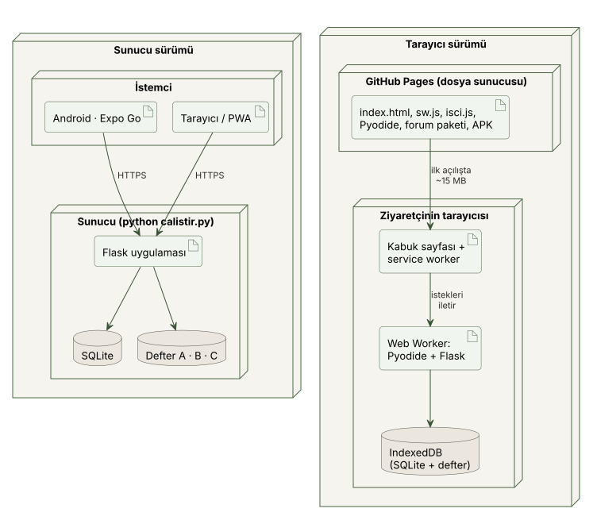
Ders sunumlarındaki laboratuvar görevleri laboratuvar/ klasöründe yapıldı. Sonuçlar aşağıda:
| Deney | Sonuç |
|---|---|
| Türkçe ve İngilizce token sayısı | 10 Türkçe cümle, İngilizce çevirilerinden ortalama 1,69 kat (cl100k) ve 1,36 kat (o200k) daha fazla token tutuyor. Tek başına "Avrupalılaştıramadıklarımızdan" kelimesi 14 ve 12 token. Token sayısı arttıkça maliyet, gecikme ve bağlam penceresi kullanımı da aynı oranda artıyor. |
| Sıcaklık | Güncel Claude modelleri sıcaklık parametresini kabul etmediği için deney, yerel bir kelime ikilisi (bigram) modelinde yapıldı. 10 denemede T = 0 / 0,7 / 1,5 için sırasıyla 1 / 9 / 10 farklı yanıt çıktı. Yani sıcaklık arttıkça yanıtlar çeşitleniyor. |
| Dikkat ısı haritası | Slayttaki NumPy dikkat kodu yeniden üretildi; sonuç Şekil 12'de. |
| YZ'nin önerdiği import'lar | Önerilen 7 paketin ve 8 import satırının hepsi gerçekten var. Ancak kod çalıştırılınca iki gizli gereksinim ve bir anlam kayması ortaya çıktı. |
| YZ'nin yazdığı testler | T.C. kimlik denetimi için yazılan 16 testin 16'sı da geçti. Ama mutasyon testinde koda bilerek sokulan 10 hatadan biri yakalanmadı, çünkü "10. hane hatalı" testi 11. haneyi de bozuyordu. Buradan çıkan ders: testlerin geçmesi, kodun doğru olduğunu kanıtlamıyor. |
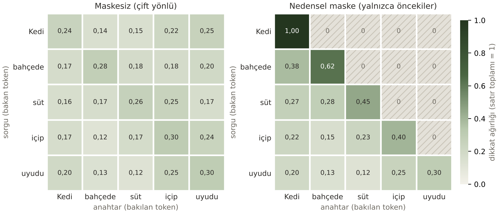
Projenin bilinen sınırları şunlar:
Bu nedenlerle Agora, gerçek kullanıma açılmış bir ürün değil, bir prototip.
YZ kullanım beyanı (S01‑46, 47; H2‑59). Forumun ilk sürümü benim commit'im (1 Ekim 2026). Sonraki commit'lerde Claude Code (Anthropic) kodlama aracını kullandım. Araç şu işlerde kullanıldı: analiz ve tasarım belgeleri, SOLID ve desen düzenlemeleri, hata düzeltmeleri ve testleri, ölçüm betikleri ve örnekleri, tarayıcı sürümü, mini laboratuvar, diyagramlar ve bu rapor. Ürün fikri, ilk sürüm, hedefler, ders kaynakları, kapsam kararları, gözden geçirme ve teslim bana ait. Testleri de YZ yazdığı için düzeltme testlerinin eski kodda başarısız olduğu ayrıca denetlendi; başarı ölçütleri de sonuçlar görülmeden önce yazıldı.
Kaynaklar: Ders sunumları (S01, S02, H2, TD); Chip Huyen, Designing Machine Learning Systems
(2022) ve AI Engineering (2025); Gamma vd., Design Patterns (1994). Ayrıntılı belgeler: docs/analiz.md,
docs/tasarim.md, docs/rehber.md. Bütün diyagramların kaynakları docs/rapor/sekiller/ klasöründe.